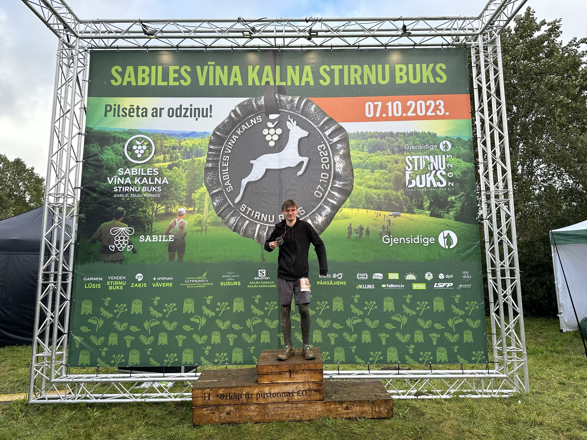
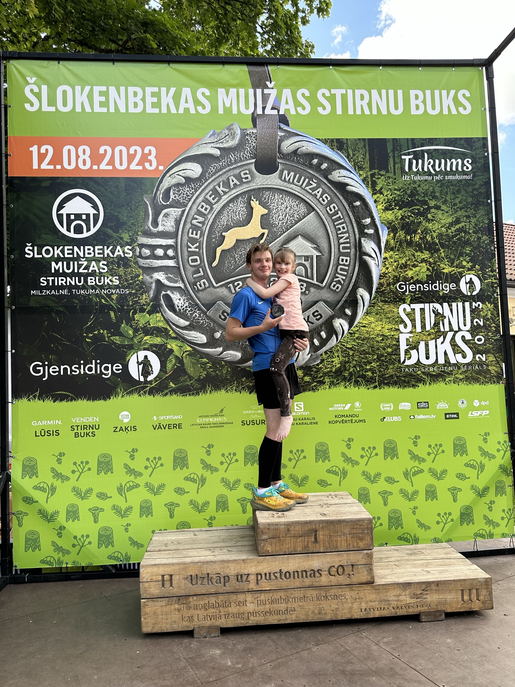
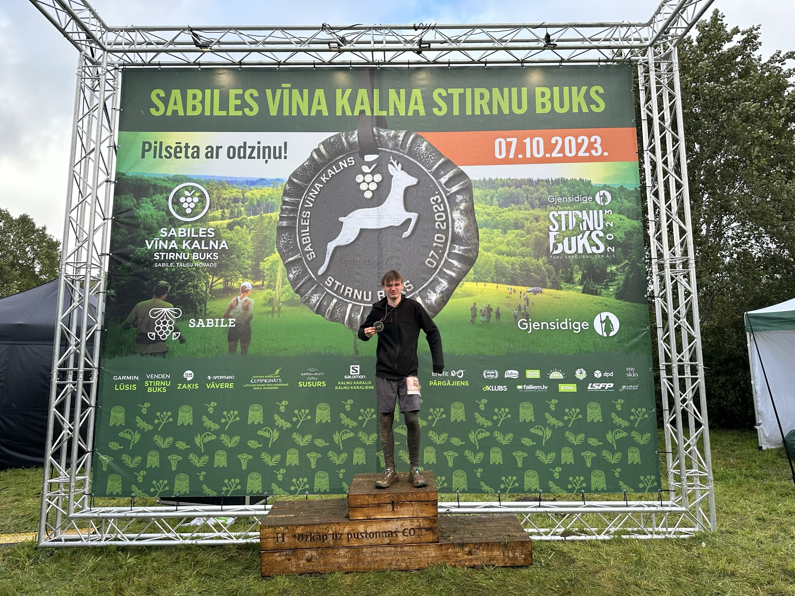
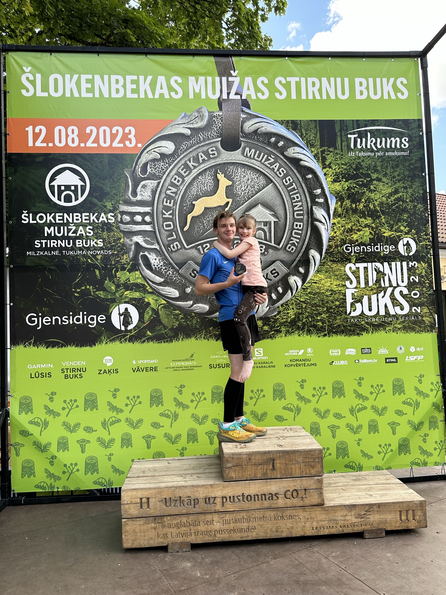

About Me
Artūrs Balnass
Photo of me: somewhere in August.
My first image in the University of Latvia.
Glad, that I choose this univercity.
The thing is...
I love nature and It's golden apples.
My beloved quote...
"Interese ir dzīves kustība"
This is a home page
This webpage is used to see my skill in this course
There is nothing special here
Here you can check, what should be in this Practical assignment
Gotcha
Change quote
Scouting
Not my picture, link to source
This is how typical hiking looks like
Scouting, also known as the Scout Movement, is a worldwide youth social movement employing the Scout method, program of informal education with an emphasis on practical outdoor activities, including camping, woodcraft, quatics, hiking, backpacking, and sports. Another widely recognized movement characteristic is the Scout uniform, by intent hiding all differences of social standing in a country and encouraging equality, with neckerchief and campa hat or comparable headwear. Distinctive uniform insignia include the fleur-de-lis and the trefoil, as well as merit badges and other patches.
My scouting
May 4, Year 2023
Photo is taken after honor walk to the Statue of Freedom
Scouting is helping me to be more patriotic to the country I'm living in.
Running
Me after multiple running races, Year 2023
 



Runnning is like a hobby for me, always want to do, don't have time to actually run
Why running?
In Ogre, Summer
Very chaothic stage
I don't know, one day started, still continue to do it
Dancing
Somewhere in the primary school

Folk dancing is no joke, but there is fun to it
Tautas deja ir horeogrāfiskās folkloras žanrs līdzās rotaļām, rotaļdejām un rotaļspēlēm. Citi nosaukumi:
- Etnogrāfiskā deja;
- Dejas folklora;
- Folkloras deja;
- Tradicionālā deja;
- Etnodeja;
- Danči.
Tautas deja kalpo kā iedvesmas avots skatuvisko horeogrāfisko priekšnesumu veidošanai, kuras sauc par jaunrades dejām, skatuviskajām dejām jeb stilizētajām tautas dejām.